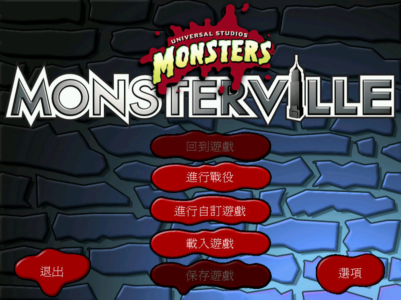
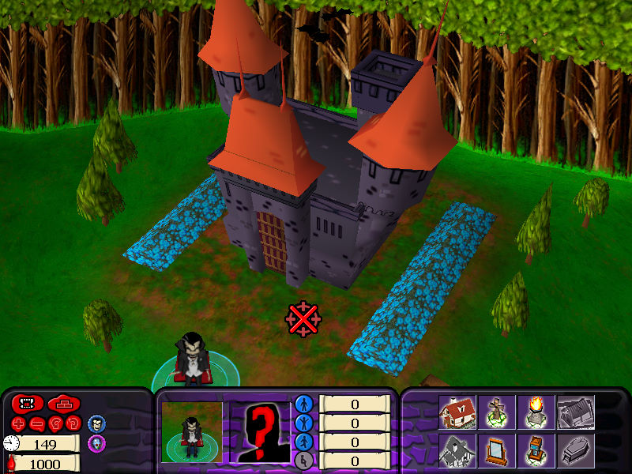

名稱：妖怪與鄉巴佬 (Universal Monsters: Monsterville，中文／英文版) 簡介：Intelligent Games 2002年出品的即時戰略遊戲，由Cryo代理發行 [待補]。   保護：無 備註：VirtualBox需搭配WineD3D，不過效能不佳，也有貼圖問題，VMware則無法正常執行， 建議使用Win64實機+dgVoodoo2。 備註：遊戲需要d3drm.dll。 檔案：cht.rar = 繁中漢化檔

